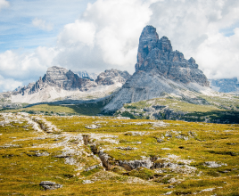

01 сентября 2022
С.А. Добролюбов: ХXI Век будет веком океанов
8 июня отмечается Всемирный день океана. О профессии океанолога, о современных технологиях и перспективных направлениях развития науки рассказывает заведующий кафедрой океанологии, декан географического факультета, академик С.А. Добролюбов...

01 сентября 2022
На стыке двух наук: кто такие геоморфологи и чем они занимаются
На важную роль геоморфологиии палеогеографии в системе географических наук во многом указывает само место, которое они занимают в учебном плане для студентов географического факультета МГУ.
01 сентября 2022
XV Всероссийская палинологическая конференция
Дата проведения – с 1 по 3 июня. Участниками конференции стали более 120 палинологов, а также географов, геологов, биологов, экологов, археологов и других специалистов, тесно связанных в своей научной работе с разными направлениями палинологических исследований.